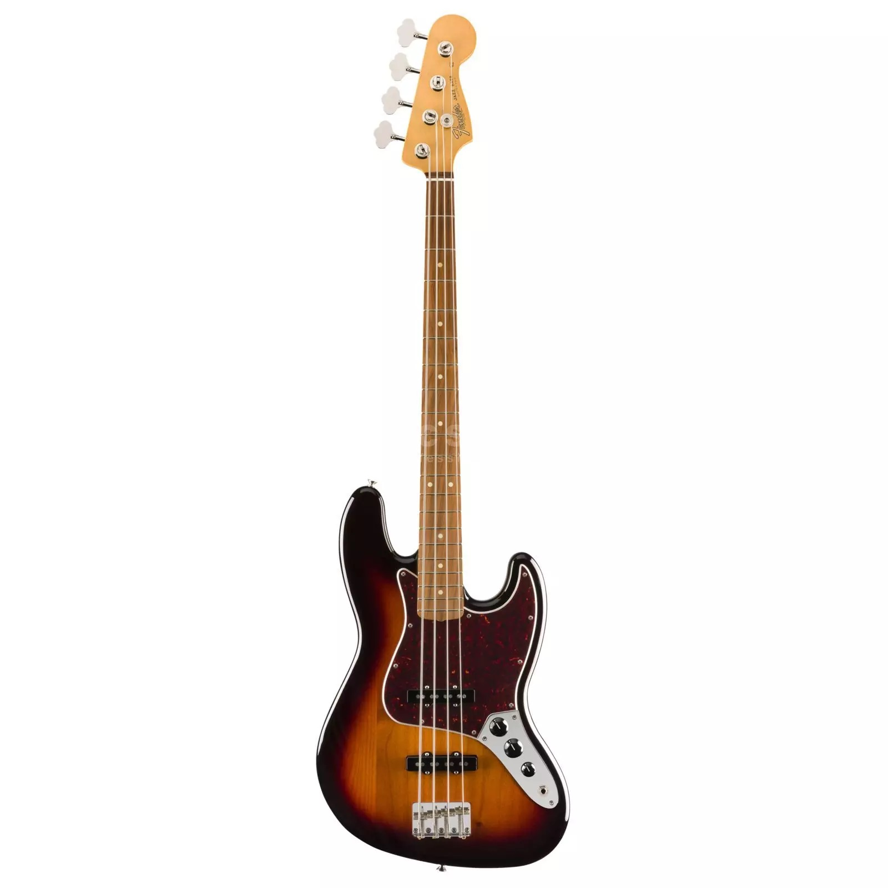
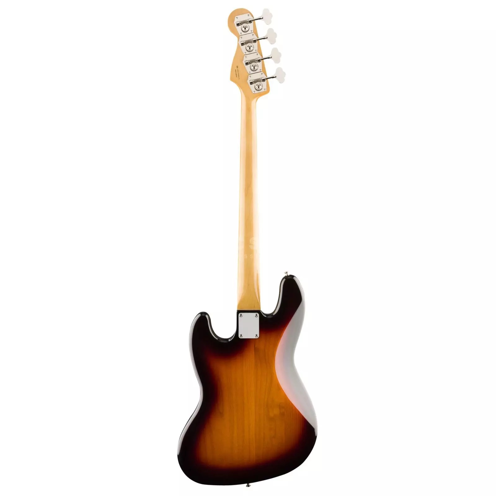
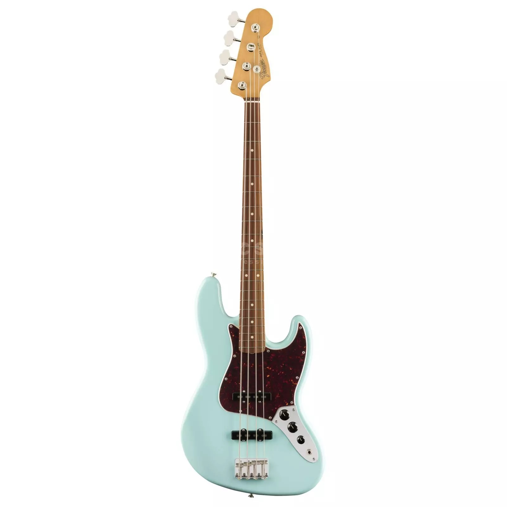
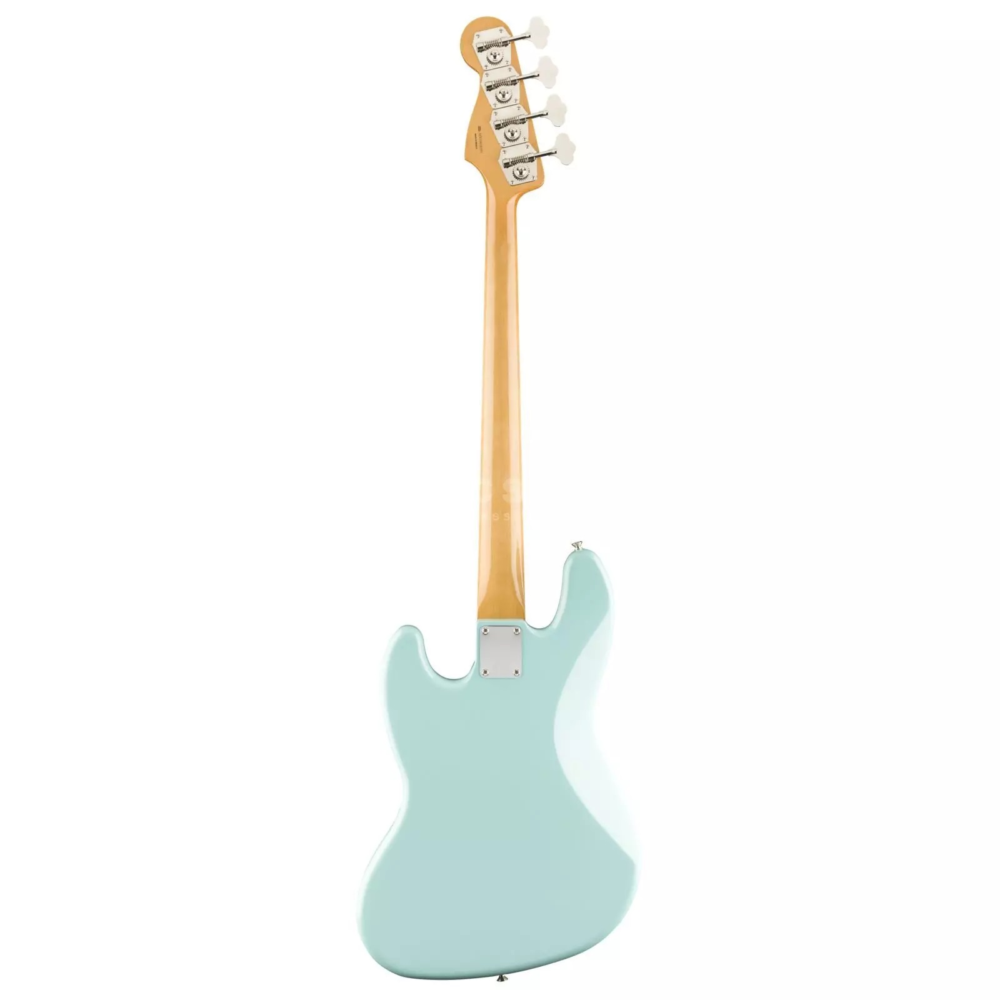

CONTRABAIXO FENDER® 60S AM ORIGINAL JAZZ BASS®
Com o Fender Vintera Jazz Bass PF 3-Color dos anos 60, Fender está lançando uma autêntica reedição do segundo grande projeto de baixo de Leo Fender da era dourada dos instrumentos elétricos.